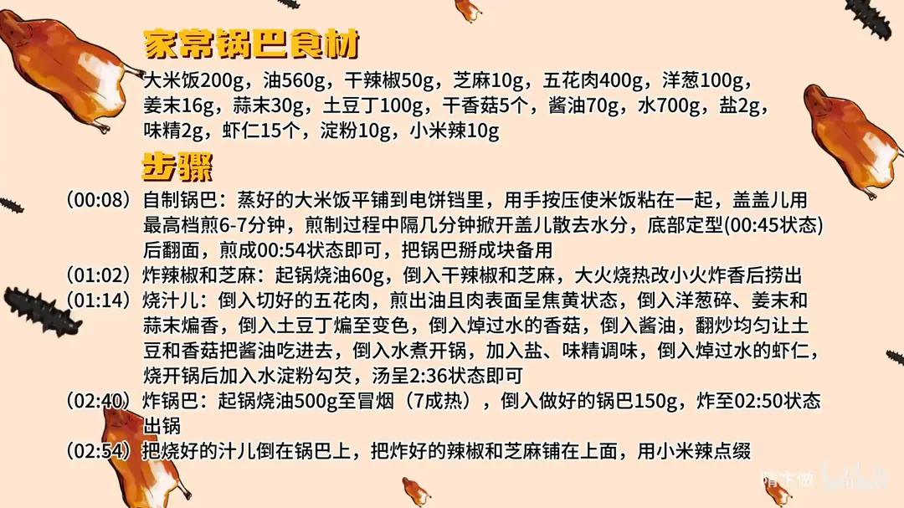

家常锅巴
隋卞一做。米饭铺进电饼铛按压紧实，最高档煎 6-7 分钟成锅巴；五花肉煎出油后与香菇、土豆丁烧成汁儿，七成油温炸锅巴，油 560g 分两次用。
原视频：https://www.bilibili.com/video/BV181UtYdED3
食材
大米饭、五花肉 等 17 样
| 类别 | 用料 | 用量 |
|---|---|---|
| 主料 | 大米饭 | 200g |
| 主料 | 五花肉 | 400g |
| 辅料 | 干辣椒 | 50g |
| 辅料 | 芝麻 | 10g |
| 辅料 | 洋葱 | 100g |
| 辅料 | 姜末 | 16g |
| 辅料 | 蒜末 | 30g |
| 辅料 | 土豆丁 | 100g |
| 辅料 | 干香菇 | 5 个 |
| 辅料 | 虾仁 | 15 个 |
| 辅料 | 小米辣 | 10g |
| 调料 | 酱油 | 70g |
| 调料 | 水 | 700g |
| 调料 | 盐 | 2g |
| 调料 | 味精 | 2g |
| 调料 | 淀粉 | 10g |
| 调料 | 油 | 560g |
步骤
- 自制锅巴：蒸好的大米饭平铺到电饼铛里，用手按压使米饭粘在一起，盖盖儿用最高档煎 6-7 分钟。煎制过程中隔几分钟掀开盖儿散去水分，底部定型后翻面，两面都煎到焦脆即可，把锅巴掰成块备用。
- 炸辣椒和芝麻：起锅烧油 60g，倒入干辣椒和芝麻，大火烧热后改小火炒香，捞出备用。
- 烧汁儿：倒入切好的五花肉，煎出油且肉表面呈焦黄状态；倒入洋葱碎、姜末和蒜末煸香，再倒入土豆丁煸至变色；倒入焯过水的香菇，倒入酱油，翻炒均匀让土豆和香菇把酱油吃进去；倒入水煮开锅，加入盐、味精调味；倒入焯过水的虾仁，烧开锅后加入水淀粉勾芡，汤汁浓稠即可。
- 炸锅巴：起锅烧油 500g 至冒烟（七成热），倒入做好的锅巴 150g，炸至金黄酥脆出锅。
- 装盘：把烧好的汁儿倒在锅巴上，把炸好的辣椒和芝麻铺在上面，用小米辣点缀。
讲解要点
难度：★★☆☆☆（不难，难在把米饭烘到干透、炸锅巴时油温够高）
为什么这么做
- 米饭趁热摁、薄厚均匀、每粒都粘上：米粒互相粘住才能整片起锅，松散的一摁就散。
- 最高档加热，每隔几分钟开盖放水汽：湿气散不出去锅巴干不了；掰开「嘎巴」一声两半，才算到位。
- 底部定型翻一面，之后不再翻：两面各定一次型就够了，翻多了容易碎。
- 五花肉先煎到出油、表面焦黄：这道菜的香味底子是动物油脂，油不出、味不香。
- 土豆丁先煸再烧：土豆淀粉在汤汁里起浓稠作用，汁自然挂得住，不用全靠淀粉。
- 加酱油后先别加水：让煸香的肉和土豆把酱油吃足，增香兼去腥。
- 辣椒、芝麻大火烧热后改小火慢炸，最后才撒上：辣椒要炸得跟锅巴一样酥，最后放才不返潮。
- 七成热油炸锅巴：高温下锅瞬间定型、膨松，吸油少。
容易翻车
- 电饼铛不散热气，或米饭铺太厚，锅巴潮软、掰不脆。
- 汁勾芡过稠会结成糊块，过稀则浇上去挂不住，锅巴立刻回软。
- 油温不够就下锅巴，炸不蓬松、吸油发硬。
- 辣椒用大火炸久了发黑发苦。
原片尾卡

原片文案
AI 字幕校准稿
今天教你们在家里边做锅巴——家常锅巴。
电饼铛打开之后，把米饭趁热摁到里面，摁得薄厚均匀一些，让每个米粒都直接粘上。很均匀了之后再加热，用最高档。
看着上面热气越来越多了，证明里边的水汽在蒸发；如果老没有热气，你就检查一下电饼铛是不是坏了。可以掀开放一放，然后再盖上，每隔几分钟就打开跑跑热气——里边的湿气太多，这锅巴干不了。
你看这个样子就能翻一面了，然后就不用再翻面，每隔几分钟放放水汽就行。差不多做成这种效果就可以了：主要是里边没有水分，一掰嘎巴就两半了。然后给它掰成块。
点火，锅里加底油，辣椒还有芝麻，大火烧热，改小火让它慢慢炸，把辣椒炸香。炸好之后把辣椒捞出来。切好的五花肉倒里边，把肉里的油脂煎出来；看锅里出油了，肉也变成表面有点焦黄了，就可以放洋葱、姜末、蒜末——这是增加锅气的味道，葱姜蒜要炒出香气。
把土豆倒进去，用锅里的油煸一下；一会儿煮的时候，土豆里的淀粉还会在汤汁当中起到浓稠的作用。煸到土豆变色，把焯过水的香菇放进去，这时候加入酱油，别着急加水，让刚煸香的肉和土豆把酱油的味道吃足，同时也能起到去腥的作用。
然后加水，开锅让肉香味滚到汤里边去。里边加盐、味精，加入焯过水的虾仁，烧开锅勾芡，勾成这样就可以了。
做油，烧油炸锅巴，看这锅巴炸成这种蓬松的状态就可以了，出锅。然后放入炸好的辣椒，点缀点颜色，完成。
锅巴在最酥最脆的时候吸那个味道吸得好足，但锅巴还是又酥又脆。好香啊，你嚼着嚼着，酱油那种咸鲜、油脂的香味和一点点辣，然后还有大米的香气。
为什么这辣椒最后放？它是炸得很酥的，辣椒酥得跟锅巴一样，一块吃，每一口咬下去都是一个跳跃。家里有什么你就放什么就行了，所以我们叫家常锅巴。